My Comprehension of Clouds
Intro
In order to learn clouds, I choose AWS Web Services as the example to explore. The best thing about cloud solutions is that companies can simply rent a server instead of building, maintaining and paying for its own infrastructure.
Cloud Computing:
- Common opinion on cloud computing is that it concerns System Administrators or DevOps Engineers because of solutions it provides on servers provsion, networking etc. In fact, It also concerns Software Developers, Security Engineers, Program Managers and so on as there are services related to computing, storage, database, analytics, encryption, deployment and more .
- Cloud computing is basically a model in which computing resources are available as a service.
- Important characteristics of cloud computing:
- On-demand and self-serviced: we can launch it at any time with no manual intervention. What that means is we can provison resources whenever needed without requireing any human's action from provider's side.
- Elasticity: we can scale it up or down at any time due to our needs. This property is strictly related to scalability that can be horizontal (adding or removing servers in a cluster) or vertical (adding or removing resources in existing server).
- Measuread: we pay as many as much resources we use.
- High-Availability: making backups and accommodating failure of a single component. I case of a server's failure there is another instance to back it up. - There are 3 types of cloud computing:
- Software as a Service (Saas) - an application typically accessivle via a browser. Provider takes responsibility for upgrading, security, error handlin etc.
- Platform as a Service (PaaS) - deploying Python application on server along with all dependencies.
- Infrastructure as a Service (Iaas) - ... .
 source: wp-includes.com
source: wp-includes.com
- Cloud Architecture:
1. Clouds is actually a real Data Center with X servers already set up.
2. Data Center provides Virtualization layer (in case of AWS it's mainly XEN).
3. On top of virtualization layer there are multiple Virtual servers.
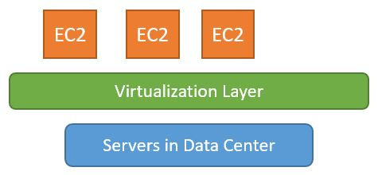 - Data centers are organized into availability zones that are separated by geograpic region. They play a role of backups in case of one of the Data Centers failure.
- Each AWS region contains at least 2 availability zones.
Server Connection:
- For server connection we need to get:
- SSH Client for Linux Server or
- RDP Client for Windows Server
which allows us to get connected with the server. - To get SSH client for windows on local machine I use MobaXterm.
- MAC and Linux has its own terminal with already built-in SHH client.
- There is also a way of connecting to server from a browser using Broweser Based SSH Connection. Then you don'y have to have any SSG client. It can be done from AWS console directly.
- There is also a need for establishing the Key Based Authentication.
- it replaces the password based authentication as using password for authentication is less secure,
- in key based authentication there are two special keys: public key and private key,
- when public key is stored in a server then only corresponding private key can authenticate successfully,
- we can simply create a key pair for exampple in EC2 in the AWS console. We can choose its format as pem (when using OpenSSH) or ppk (when using PuTTY). Once created, key gets downloaded to local machine as the private key.
Infrastructure as a Code (IaaC):
- There are two ways of building the infrastructure: manually or with script's automation.
- Automation with Iaac helps to autmate infrastrucutre building on every stage of app's service:
1. As every time a new app's service comes up, its infrastructure needs to be first built up in the development environment.
2. Then app's service comes to the staging area for testing where the same infrastructure needs to be built once again.
3. Moving to the production environment where all the infrastructure has to be replicated. - It's getting even more helpful when deploying multiple app's services.
- One IaaC template can be reused for building infrastructure for different stages of different app's services during deployment.
- Tools for IaaC: Terraform or AWS CloudFormation.
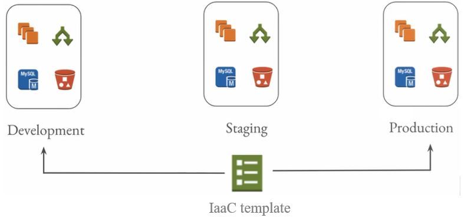source: udemy
AWS Storage types:
| Block Storage | Object Storage |
|---|---|
| Data (files) is split into smaller chunks of a fixed size (blocks). | Each store fiels is an object. |
| Each block has its own address. | Each object has unique identifier. |
| No metadata about blocks. | Metadata with contextual information about single object. |
| Supports read/write operations. | Data is mostly read (rather than written to). |
| Easy data modification accessing specific block. | Modifying a file means uploading a new revision. |
| Accessing blocks on server with underlying file system protocol (NFS, CIFS, ext3/ext4). | Accessing objects relies on HTTP protocol. |
Domain Name System:
- Translates Domain Name to corresponding server's IP address:
www.example.com->1.2.3.4 - Workflow:
1. User enterswww.example.comin a browser.
2. IPS DNS Resolver looks up corresponding IP address and returns1.2.3.4.
3. Browser takes server IP address and makes HTTP request to AWS server.
4. AWS EC2 server accepts request.
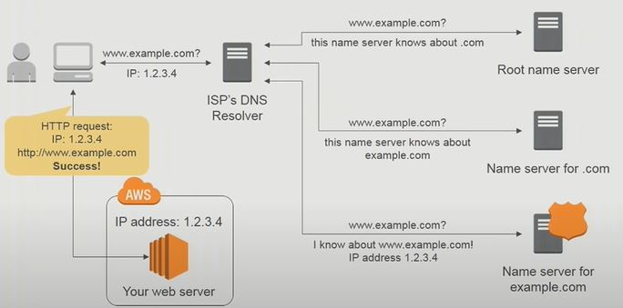source: AWS
Virtual Private Cloud (VPC):
- It is a private sub-section of AWS which you are in control of in terms of who has access to what AWS resources.
- More technically, AWS lets us provision a logically isolated cloud's section in which we can define a ccustom virtual network configurations like IP addresses, subnets, route tables and network gateways.
- VPC architecture:
 source: Linux Academy
source: Linux Academy
- When creating AWS account, there is a default VPS being created for a user. So everybody has their own VPC.
Features
App includes following features:
Demo
EC2:
- It stands for Elastic Computing Cloud.
- Actually, it's a name for a server that we can launch in AWS.
- Elastic means that we can resize the server's capacity at any time.
- AWS ensures high-availablity so when on EC2 server goes downm the hosted application can be still served on another EC2 server.
- Launching server is as easy as hitting a button and going through a configuration
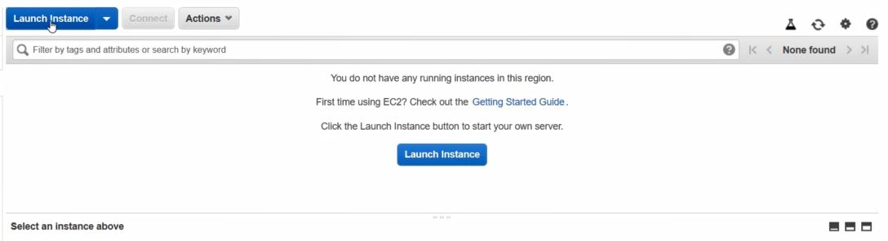 - When launching a new instance of EC2 on AWS we need to configure following things:
- region,
- server OS which is Amazon Machine Image (AMI),
- CPU and memory size of EC2 instance,
- num of instances,
- storage capacity,
- authentication key,
- security (firewall). - Once instance created, we can connect server with SSH:
- connecting to EC2 server:
ssh -i ec2-key.pem ec2-user@{Public IP}
- getting admin rights:
sudo su -
- intalling some stuff:
yum -y install nginx
yum -y install mysql
- cd to location:
cd /usr/share/nginx/html/
- modifying a file:
echo "Hello World" > index.html
- running service:
service nginx start - OS for EC2 instance is the Amazon Machine Image (AMI). We can run multiple instances from a single AMI.
- There are also a persistent block storage volumes for AWS EC2 instances. We call it Elastic Block Store (EBS):
- It's available under Root device property of the EC2 instance:
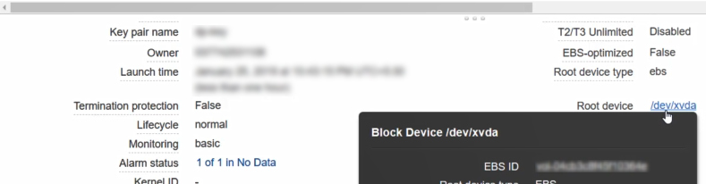
- Persistent means that the data will remain even when we stop the EC2 instance.
- The volumes are replicated, backed up and connected to EC2 instances with the network.
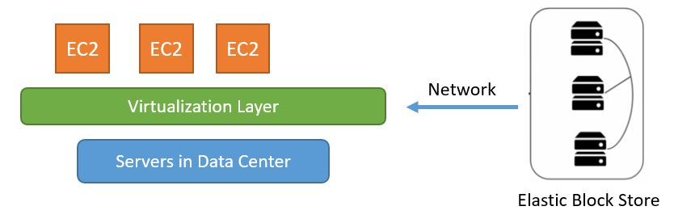
- We can still ustilize the instance's store which gives fast performance, however the data will be lost if you EC2 instance stops or terminates or the underlying hosting disk fails. The recompensation might be the fact it's quite cost-effecitve, however, we need to make sure to back up the data in S3 for example.
- What kind of storage we want to use, we need to specify on AMI configuration step:
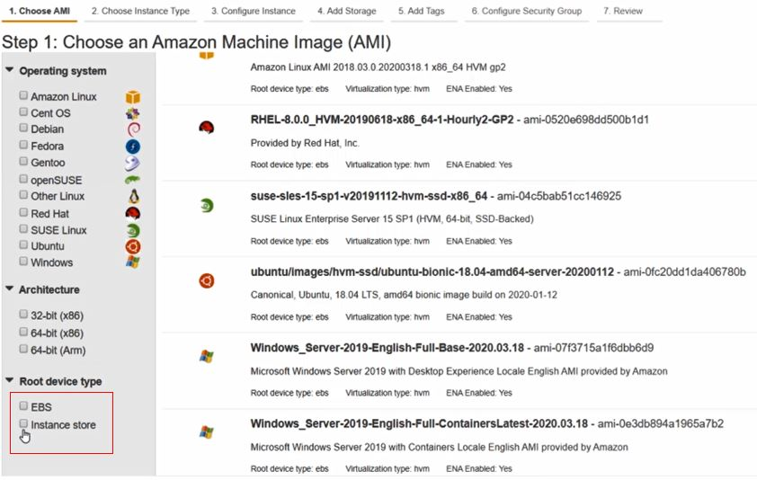 - EC2 is equipped with Elastic Load Balancer (ELB) so that traffic can be distributed across multiple EC2 instances.
- EC2 has Auto-Scaling built in which automatically adds or removes EC2 instances according to conditions we define e.g.:
1. Dynamic Scaling:
- if average CPU utilization > 60 % then add two more instances,
- if average CPU utilization < 30 % then remove two instances.
2. Scheduled Scaling:
- servers are scaled based on a specific schedule.
3. Predictive Scaling:
- based on machine learning algorithms to automatically adjusting servers capacity.
AWS Relational Database Service (RDS)
- AWS RDS supports various database engines like MySQL, PostgreSQL, Microsoft SQL Serverm Oracle that can be hosted on EC2.
- AWS offers also the noSQL databse in DynamoDB that stores key-value pairs.
- Like in other services AWS provides:
- database provisioning via GUI,
- security,
- patching,
- backup,
- high-availablity. - We are able to pick up the engine while creating database
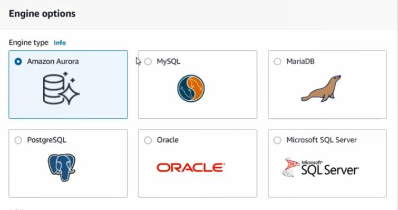 - Amazon Aurora is a compromise between performance of traditional enterprise databases and simplicity and cost-effectiveness of open-source databases. Once creating we don't have to specify the storage as it grows along with the size of it.
Serverless Services:
- In fact, it doesn't mean that there is no server being present. There are server to host your application, however is completely managed by the provider. You only care about the app's code.
- Very popular way of having serverless service is a PaaS model where only need is to upload the the application. PaaS provider takes care of the rest which is setting up the capacity, launching servers in high-availability and auto-scaling mode, installing technology-specifc packages and dependencies, security, patching, monitoring.
- There are AWS Services that can be used without any server instantiation.
There is no need for any capacity planning or how much resources we might need.
We are being charged only for the computing time we consume.
Example serverless services:
- AWS Lmabda for computing,
- AWS S3 for storage,
- DynamoDB for Database,
- SQS, SNS for an app integration.
Storage classes:
- Depending on Storage Class, the availablity, durability and perfomrance, thus pricing will differ:
- Standard S3: for general purpose, has higher availablility and pricing much higher than for infrequent access.
- Standard S3 with Infrequent Access (Standard IA): when we don't care about high availablity then we can go with that opition with lower pricing.
- Reduced Redundancy Storage (RRS): lower durability and lower availablity so we could keep only non-critical, reproducible data.
- Glacier: meant for archiving and storing long-term backups. It has a very high durability however low availability - it takes even a few hours to get data restored.
- Glacier Deep Archive: lowest-costs possible storage class that AWS offers. Supports long-term retention for data that may be accessed once or twiece a year. It has very lowe availablity - data can be restored within 12 hours.
- Intelligent Tiering: it detects seldom used data and moves it to most cost-effective tier like Standard IA. So we end up with frequent access tier and infrequent access tier that differ with pricing. This type is preferable when we store long-lived data where access patterns are unknown or unpredictable - we cannot assess which part of data will bea accessed frequently and which not.
- One Zone-IA: while Standard S3 or Standard IA sores data in min. 3 availability zones, S3 On Zone_IA stores data in single availablity zone which reduces overall costs. It's a good solution for a secondary backup copies of on-premises data or for the data that can be easily recreated. Only risk is the data will be lost in case of availablity zone destruction. - We can choose storage class while uploading object to S3:
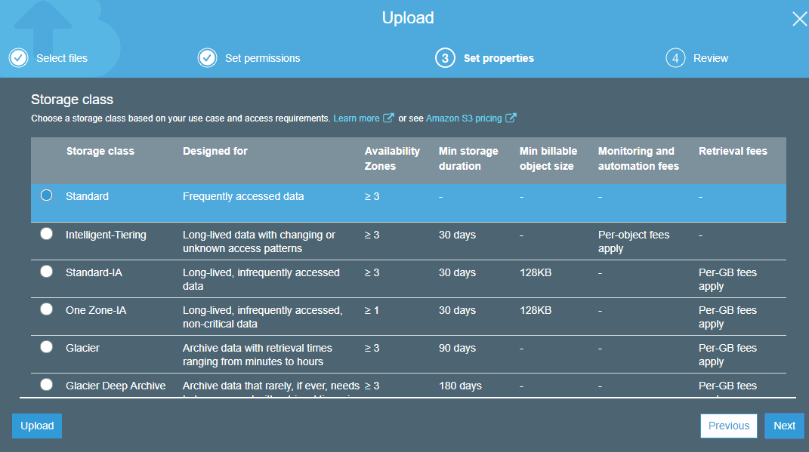
Amazon Simple Storage Service (Amazon S3):
- S3 is the durable storage system and is based on object storage.
- In S3 we have buckets that are like folders where we can store multiple objects (files). Bucket names are unique across enitre AWS namespace. Buckets can have subfolders.
- Can be used for storing simple websites at the lower costs. With that solution there is no need for instantiating EC2 server.
- When you upload some file to the cloud storage it back file up automatically.
AWS Lambda:
- It's a fully managed compute service that runs our code when event appears (for instance uploading objects to S3 can trigger Lambda function)or on the time base.
- AWS Lambda provides:
- servers,
- capacity,
- deployment,
- scaling,
- high-availability,
- os updates,
- security. - What we provide:
- code,
- money - as much as we use it. - There are many AWS-related events that can trigger a lambda function:
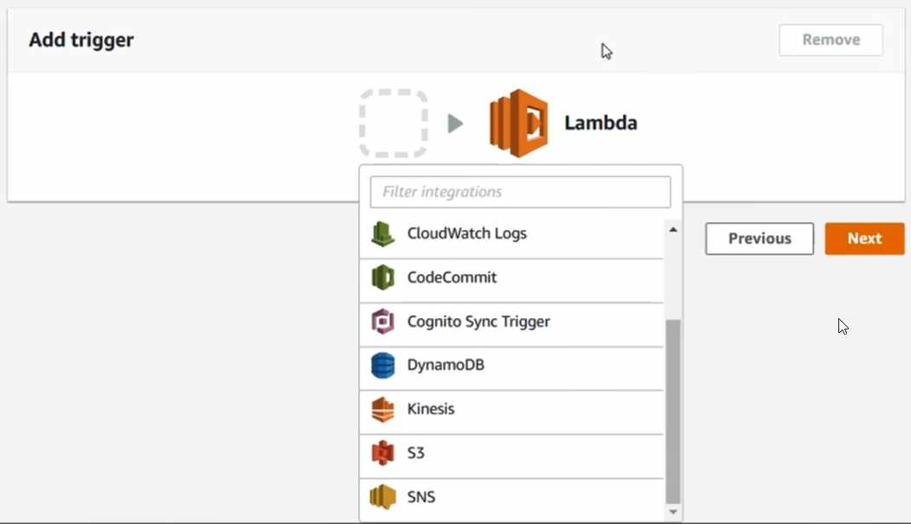 - We can specify Runtime while configuration:

CloudFront:
- Service for Content Delivery Network (CDN) which acts like a proxy that receives requests and forward those requests to the backend systems.
- CDN caches website or application files, HTML, CSS, JS, images or videos at data centers around the world. Even when backend server goes down, CDN is able to serve the content of a static web-site back to the end user..
- When setting up the CloudFront service we define amount of data centers - the edge locations. The more edge locations, the higher perfomrance and the lower latency of getting server's content as reposnse on user's request.
- The edge locations allow users to download the app content much faster from the nearest edge location rather than when request would need to go all the way to the origin server.
- User request may need to go to the origin server in case when the content at the closest edge location is not present at the moment.
- Content is being cached at the edge location for a specific period of time - Time To Live (TTL).
AWS Storage Gateway:
- A service that lets the on-premise application to access and use the cloud storage.
- In Gateway Stored Volumes configuration, there is on-premise storage for an application server. Whenever a file added to that special local storage, it's being uploaded asynchronously to the AWS S3 or AWS EBS in a compressed manner.
- In Gateway Cached Volumes configuration, there is no on-premises storage. Data is stored primarly on AWS S3, what we have locally on-premise server is a cache of recently read or writthen data.
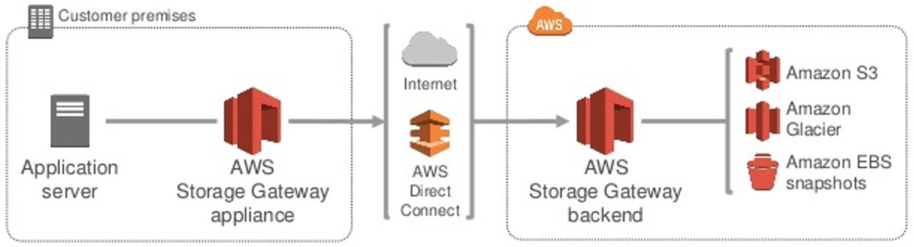source: AWS
Data Warehouse:
- Using in Business Intelligence in which we transofrm raw data into useful business insights. It goes with following steps:
1. Gathering data from different sources: ERP, CRM, OS, flat files.
2. Extracting data from all sources, transforming and data cleaning and loading it into a data warehouse.
3. Using data in data warehouse for the business analysis. - Data ralational database vs data warehouse:
Relational Database Data Warehouse Contains the up-to-date data. Contains the historical data. Useful in running the business. Useful in analyzing the business. Read and write operations. Mostly read opeartions. Accessing limited number of records. Accessing even milion of rows if needed. Usually one source that serves an application. Typically a collection of many data sources. - AWS offer data warehouse service with Amazon Redshift whose architecture looks like below:
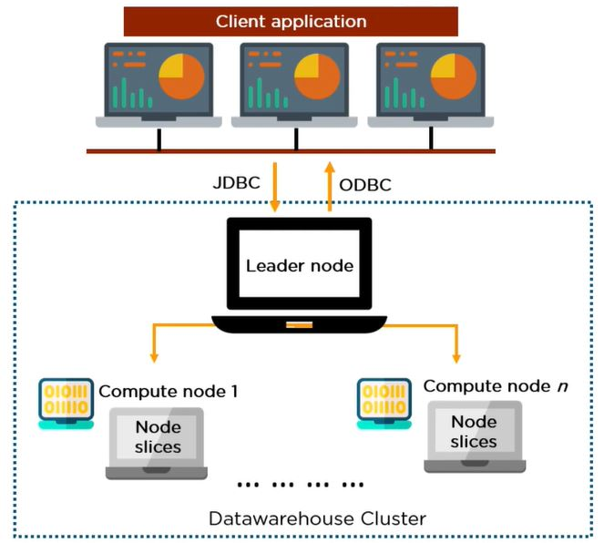source: simplilearn
- The main element of Amazon Redshift is a cluster of nodes - datawarehouse cluster.
- There are compute nodes that process data and the leader node that gives instructions.
- Leader node also manages client applications, like BI tools, that require data from the Redshift.
- Leader node uses JDBS (Java Database Connectivity) to monitor all of the connections to client appications.
- Client applications uses ODBC (Open Database Connectivity) to interact with live data of the datawarehouse cluster sending SQL queries.
- Compute nodes are divided into slice with dedicated memory space. They run in parallel to process the data in a fast manner.
- Workflow:
1. Client app sends query to the leader node.
2. Leader node receives the query and develop a suitable execution plan.
3. Once the plan is set up, compute nodes and compute slices start working on this plan.
4. Compute nodes work in parallel and transfer data among themeselves in order to solve the query.
5. Once excution is done. the leader node aggregates the results and sends it backt to clien app.
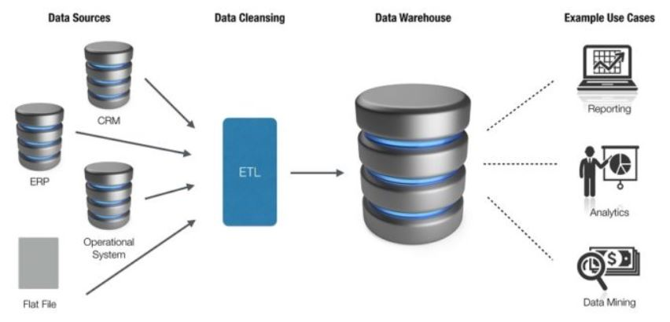source:radikal-labs.com
AWS Glue:
- ETL service to categorize, clean, enrich, and reliably move data between various data stores.
- It collects different data carriers, then identifies the data types, suggests some transformations and generates editable code (ETL script) to execute the overall transformation and datawarehouse loading process.
- AWS Glue has 3 main components:
- Data Catalog - central metadata repository that alwyas stays in sync with the underlying data thanks to the so-called crawlers.
- Job Authoring - ETL engine that automatically generates Python or Scala code.
- Job Execution - flexible scheduler that handles dependency resolution, job monitoring, potential retries and alerting. - ETL scripts uses the dynamic frame - similar to the Apache Spark dataframe. Dynamic frame is a data abstraction to organize data into rows and columns where each record is self-describing so no schema is required initially. We can freely be converting dynamic frames into Spark dataframes.
- Here are some applicatons:
- AWS Glue can catalog S3 data lake making it available for quering with Amazon Athena and Amazon Redshift.
- Making event-driven ETL pipelines: running ETL jobs as soon as new data comes in Amazon S3 by invoking your AWS Glue ETL jobs from an AWS Lambda function. - Cataloging data for quick search of datasets and maintaining relevant metadata in once central repository.
AWS Athena:
- Query service for managing Amazon S3 data with standard SQL.
- There is no need for any underlying compute infrastructure, no need for loading data into Amazon Athena or transforming it for the analysis.
- We can access Athena through either the AWS Management Console, an application programming interface (API) or a Java Database Connectivity driver, then we we define schema and here we go - we can execute SQL queires.
- You only pay for queries you run and that's all.
Setup
Following installation required:
- MobaXterm from https://mobaxterm.mobatek.net/download-home-edition.html